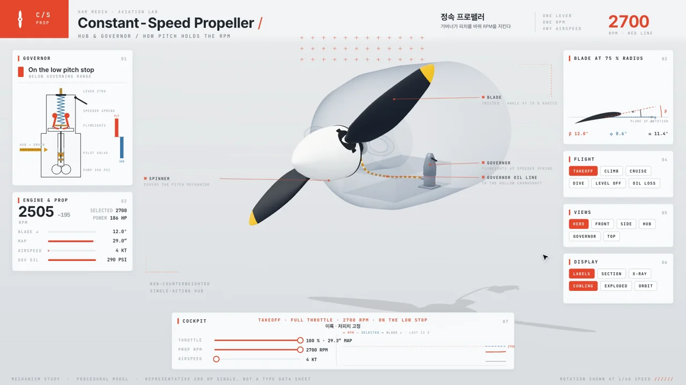

AVIATION · INTERACTIVE STUDY
회전은 일정하게,
날개의 각도는 다르게.
속도가 달라져도 회전을 맞추는 정속 프로펠러.
RPM을 바꾸고 허브 안을 열어, 거버너와 유압이 하는 일을 살펴보세요.
작동 관계를 손으로 읽기
무평형추 · 단동식 허브
선택할 때만 3D를 불러옵니다.
기계를 드래그해 돌려 보세요. 시점과 확대는 아래에서도 고를 수 있습니다. 회전은 원본과 같은 1/60 속도입니다.
체험을 시작하면 같은 기계 상태에서 나온 수치와 설명을 읽을 수 있습니다.
TRY THIS FIRST
먼저, 하나씩 바꿔 보세요.
순항 상태에서 시작합니다. 선택 RPM과 실제 RPM, 피치의 변화를 함께 봅니다.
날개 회전과 자동 시점 이동을 줄입니다. 수치 계산은 계속되며, 멈추기는 계산도 멈춥니다.
WHAT TO WATCH
각도를 바꾸는 힘의 연결.
- 01
원하는 회전을 고릅니다.
RPM 선택이 거버너의 스프링 힘을 바꿉니다. 돌아가는 플라이웨이트의 힘과 스프링의 힘이 밸브 위치를 정합니다.
- 02
유압이 허브로 이어집니다.
과회전 쪽에서는 밸브가 올라가 오일을 허브로 보내고, 피치를 높여 회전을 낮춥니다. 저회전 쪽에서는 오일이 빠져 피치가 낮아집니다.
- 03
균형과 한계를 함께 봅니다.
정속 상태에서는 밸브가 포트를 닫습니다. 저·고피치 스톱에 닿으면 거버너가 회전을 맞출 수 있는 범위를 벗어납니다.
교육용 원리 모형 · 무평형추 단동식 허브를 대상으로 합니다. 76 in, 2100–2700 RPM, 피치 12–34° 등은 대표값이며 특정 기종의 형식증명 자료가 아닙니다. 실제 항공기 운용·정비 절차를 제공하는 화면이 아닙니다.
THE ORIGINAL FILM · 30 SEC
움직임을 한 번에 보기.
같은 기계에서 만든 기존 30초 영상입니다. 재생하면 음악과 효과음이 나옵니다.
영상 파일 직접 열기 ↗ · 영상의 주요 원리는 위 세 단계 설명에서도 읽을 수 있습니다.
만든 바탕과 출처
항공교육 예시 기획·제작: HAM MEDIA 우마 권태오. 웹 통합: 나지율. 기존 기계를 재사용해 홈페이지 체험으로 통합한 자체 제작 예시입니다.
teardown의 기계·렌더링·제작 방식을 이어 썼습니다. MIT 및 번들 저작권 고지
- Hartzell Owner’s Manual 114B · CONTROL
- Aircraft Engine Historical Society · Hydraulic Propeller Governors
- FAA-H-8083-32B · AMT Handbook — Powerplant, Vol. 2 프로펠러 장
복잡한 구조를,
이해할 수 있는 경험으로.
영상과 조작 화면을 엮은 HAM MEDIA의 자체 제작 예시입니다.
필요한 결과와 가지고 있는 자료부터 이야기해 주세요.